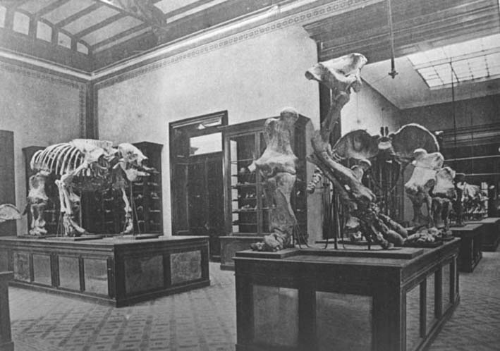

|
|  |
|
Francisco P. Moreno, Megaterios, sala 4
|
Fossils, however, abunded in the newly conquered territories, and soon the new Museo de La Plata, inaugurated in 1888, had become South Americ's most important and renowned paleontological institution, regularly visited and praised by scientists from overseas. The enormous dimensions of the mounted animals from the remote past –and Francisco P. Moreno, the museum's director, specifically encouraged his collectors in the field to look for large and impressive pieces– also metonymically referred to the enormity of the land available in the distant south, and the 'potential' of wealth and progress this old-new space offered to creoles and immigrants alike. In the cultural imagination, the fossils were animals not only of the past but also of the future: creatures of a new frontier that had been opened for enterprising and courageous minds.
|